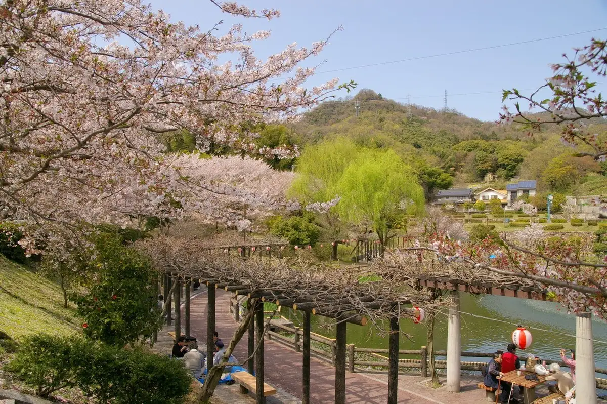
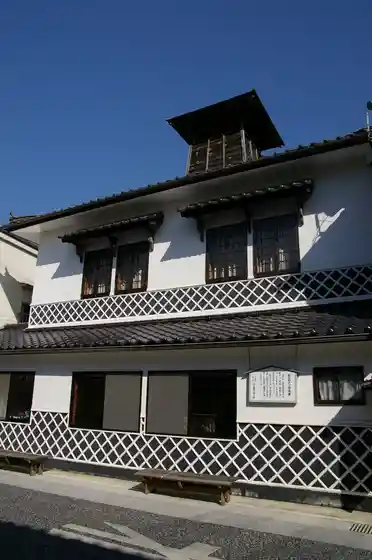
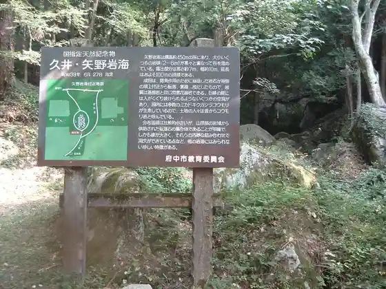
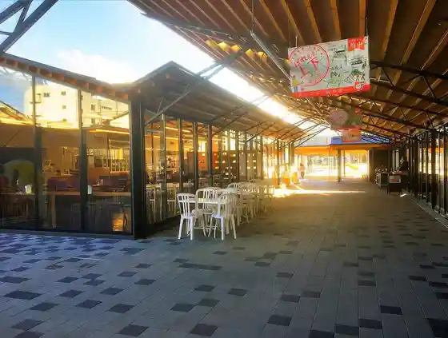
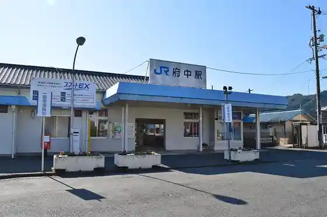

Fuchu
Fuchu · Hiroshima
Fuchu
Highlighted on the Hiroshima map.

Stay
Fuchu Daiichi Hotel
Fuji Ryokan (Hiroshima Ken)
Daikichi Ryokan
Dining
Kaori Teru Sozai
Do Raku Heri Fuchu Mise
Edo Mae Hana Hisashi Shi
Aji no Kura Fuchu Mise
Taka Ya
Yukinari Do
O Konomi Yaki Kiyo
Izakaya
Roadside Station Bingo Fuchu Resutoran
Men Ya Ichi Fuji
Dainingu Eien
Shuro Iori
Bingo Fuchu Tako Yaki
Sachi
Kohii Sen Ko Tenmaya Fuchu Mise
Men Saru
Onsen
Fuji Ryokan (Hiroshima Ken) Public Bath
Sights
Joge Streetscape

Yano Iwa Umi

Roadside Station Bingo Fuchu

Fuchu Eki

Fuchu Park